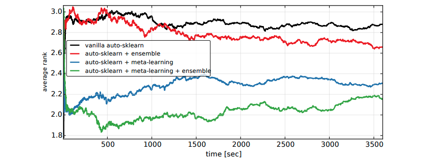
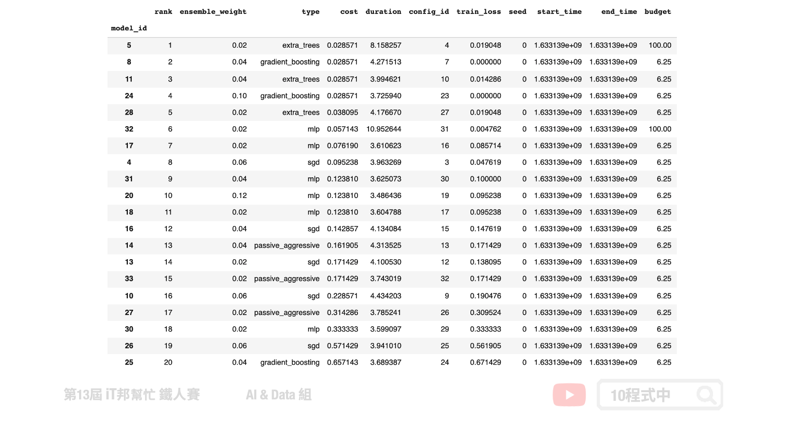

Auto-sklearn
今日學習目標
- 了解 Auto-sklearn 運作原理
- Meta Learning
- Bayesian Optimization
- Build Ensemble
- 實作 Auto-sklearn
- 採用鳶尾花朵資料集訓練，並比較兩種不同版本的 Auto-sklearn。
- 使用 pipelineprofiler 視覺化 AutoML 模型。
前言
Auto-sklearn 採用元學習 (Meta Learning) 選擇模型和超參數優化的方法作為搜尋最佳模型的重點。此 AutoML 套件主要是搜尋所有 Sklearn 機器學習演算法以模型的超參數，並使用貝葉斯優化 (Bayesian Optimization) 與自動整合 (Ensemble Selection) 的架構在有限時間內搜尋最佳的模型。第一版的 Auto-sklearn 於 2015 年發表在 NIPS(Neural Information Processing Systems) 會議上，論文名稱為 Efficient and Robust Automated Machine Learning。有別於其他的 AutoML 方法，Auto-sklearn 提出了元學習架構改善了貝葉斯優化在初始冷啟動的缺點，並提供一個好的採樣方向更快速尋找最佳的模型[1]。第二個版本於 2020 年發布，論文名稱為 Auto-Sklearn 2.0: Hands-free AutoML via Meta-Learning。在新的版本中修改了元學習架構，並不依賴元特徵來選擇模型選擇與調參策略。而是引入了一個元學習策略選擇器，根據資料集中的樣本數量和特徵，訂定了一個模型選擇的策略[3]。

AutoML 視為 CASH 問題
在論文中作者將 AutoML 視為演算法選擇和超參數優化 (Combined Algorithm Selection and Hyperparameter, CASH) 的組合最佳化問題。因為在 AutoML 領域當中將會面臨兩個問題。第一個是沒有任何的演算法模型是可以保證在所有的資料集中表現最好，因此挑選一個好的演算法是自動化機器學習的首要任務。第二許多的機器學習模型往往依賴於超參數，透過不同的超參數設定可以取得更好的學習結果。例如在 SVM 方法中我們可以設定不同的核技巧讓模型具有非線性的能力，或是透過超參數 C 限制模型的複雜度防止過度擬合。然而貝葉斯優化如今成為 AutoML 超參數搜尋的重要核心方法。

Auto-sklearn 架構
Auto-sklearn 可以被拿來處理迴歸和分類的問題。下圖為第一版論文中所繪製的架構圖。我們可以將 Auto-sklearn 切成三個部分，其中第一個是引入元學習機制來模仿專家在處理機器學習的先驗知識。並採用元特徵讓我們更有效率的去決定在新的資料集中該挑選哪一種機器學習模型。接著挑好模型後並透過貝葉斯優化來挑選合適的模型超參數，以及嘗試一些資料前處理與特徵工程。最後挑選幾個不錯的模型並透過整體學習的技巧進行模型堆疊，將表現不錯的模型輸出結果做一個加權和或是投票。
- Meta Learning
- Bayesian Optimization
- Build Ensemble

Meta Learning
當我們想對新資料集做分類或迴歸時，Auto-sklearn 會先提取元特徵，具有相似元特徵的資料集在同一組超參數應該會有相似的表現。因此透過元特徵可以有效地評估在新資料集上應該使用哪種算法。元學習在這裡的目的是為了要找一個不錯的超參數做初始化，使其在一開始的表現優於隨機的方法。並提供貝葉斯優化有個明確的方向。Auto-sklearn 參考了 OpenML 140 個資料集，並彙整了 38 個元特徵，例如：偏度、峰度、特徵數量、類別數量......等。首先為這 140 個資料集使用貝葉斯優化進行模型訓練，並將這些資料集對應的模型與最佳的超參數儲存起來。當有新的資料集進來時會先透過元特徵進行相似度匹配，並將匹配程度最高的前 k 個資料集 (預設k=25) 所對應的模型和超參數作為貝葉斯優化的初始設定。
Bayesian Optimization
在貝葉斯優化當中主要會尋找該資料集中最合適的資料前處理 (data pre-processors)、特徵前處理 (feature pre-processors) 與分類/迴歸模型。以上三大類合計共有 110 個超參數必須透過貝葉斯優化來尋找最適合的參數組合。其貝葉斯優化主要方法是透過建立目標函數的機率模型，並用它來選擇最有希望的超參數來評估真實的目標函數。

以下內容摘錄自 Auto-sklearn v1.0 論文提供的內容 [1][2]
Data Pre-processors
在資料前處理部分 Auto-sklearn 提供了四種方法。包含特徵縮放、填補缺失值、類別特徵進行 one-hot encoding 與處理目標輸出類別數量不平衡問題。
- Data Pre-processors
- 特徵縮放
- 填補缺失值
- one-hot encoding
- 類別資料不平衡
在新的版本中多了一些資料前處理方法，詳細可以參考 Auto-sklearn data_preprocessing 的原始程式。
Feature Pre-processors
在特徵前處理部分 Auto-sklearn 提供了 12 種特徵處理的技巧，然而在眾多方法中僅會挑選其中一種。

詳細可以參考 Auto-sklearn feature_preprocessing 的原始程式。
Build Ensemble
在 Auto-sklearn 訓練階段會產生許多表現優良的模型，最終透過貪婪法的 Bagging Ensemble Selection 方法來合併多個模型組合成一個更強更大的模型，並提高預測的準確性。下圖為第一版論文中進行的實驗，其中橫軸為程式執行時間，縱軸為在時間內搜尋到的最佳模型的排名。我們可以發現綠色線條再加入了整體學習機制表現效果比尚未加入的藍色線條實驗來得好。並且在短時間內就可以得到不錯的結果。

安裝 Auto-sklearn
目前 Auto-sklearn 僅支援 Lunux 系統。若沒有此系統的讀者可以透過 Colab 體驗。另外若安裝過程中出現錯誤，必須先確認 swig 是否已完成安裝。
pip install auto-sklearn
若使用 Colab 執行，安裝完成後點選上方工具列 Runtime -> Restart runtime 重啟才能正常執行此套件。

載入資料集
本次範例沿用鳶尾花朵資料集，並使用 Auto-sklearn 來搜尋最佳的分類器模型。此外大家可以試著觀察 Auto-sklearn 找到的最佳模型在訓練集與測試集上的表現，並與前幾天所介紹的那些機器學習演算法來做比較。
import pandas as pd import numpy as np import matplotlib.pyplot as plt import seaborn as sns from sklearn.datasets import load_iris iris = load_iris() df_data = pd.DataFrame(data= np.c_[iris['data'], iris['target']], columns= ['SepalLengthCm','SepalWidthCm','PetalLengthCm','PetalWidthCm','Species']) df_data

切割訓練集與測試集
我們按照花朵種類的數量對資料集以 7:3 的比例切割出訓練集與測試集。其中參數 stratify=y 設定是確保訓練集與測試集對於三種花朵類別的比例在這兩個切出來的資料集中比例要一樣，以免訓練出來的模型有很大的偏差。
from sklearn.model_selection import train_test_split X = df_data.drop(labels=['Species'],axis=1).values # 移除Species並取得剩下欄位資料 y = df_data['Species'].values X_train, X_test, y_train, y_test = train_test_split(X, y, test_size=0.3, random_state=42, stratify=y) print('train shape:', X_train.shape) print('test shape:', X_test.shape)
輸出結果：
train shape: (105, 4) test shape: (45, 4)
Auto-sklearn
以下是模型常用的超參數以及方法，詳細內容可以參考官方 API 文件。
Parameters: - time_left_for_this_task: 搜尋時間(秒)，預設3600秒(6分鐘)。 - per_run_time_limit: 每個模型訓練的上限時間，預設為time_left_for_this_task的1/10。 - ensemble_size: 模型輸出數量，預設50。 - resampling_strategy: 資料採樣方式。為了避免過擬合，可以採用交叉驗證機制。預設方法為最基本的 holdout。
Attributes: - cv_results_: 查詢模型搜尋結果以及每個最佳模型的超參數。
Methods: - fit: 放入X、y進行模型擬合。 - refit: 使用 fit 尋找好的參數後，再使用所有的資料進行最後微調。 - predict: 預測並回傳預測類別。 - score: 預測成功的比例。 - predict_proba: 預測每個類別的機率值。 - leaderboard: 顯示 k 個 ensemble 模型並排名。
首先我們來測試第一版的 Auto-sklearn，建立一個分類器類型的自動化機器學習模型並設定相關的執行參數。在本次實驗中我們設定模型搜尋總時間為 180 秒，每個模型訓練時間限制 40 秒內。此外設定 resampling_strategy='cv' 即 K-Fold 交叉驗證。此外必須另外設定 resampling_strategy_arguments 並給予 k=5，訓練集切割為五等份。這意味著相同的模型要訓練五次，每一次的訓練都會從這五等份挑選其中四等份作為訓練資料，剩下一等份未參與訓練並作為驗證集。
import autosklearn.classification automlclassifierV1 = autosklearn.classification.AutoSklearnClassifier( time_left_for_this_task=180, per_run_time_limit=40, resampling_strategy='cv', resampling_strategy_arguments={'folds': 5} ) automlclassifierV1.fit(X_train, y_train)
訓練結束後我們可以來查看模型在訓練集與測試集表現。大家可以試著調整模型訓練時間以及一些控制參數，查看是否有沒有幫助模型準確度提升。
# 預測成功的比例 print('automlclassifierV1 訓練集: ',automlclassifierV1.score(X_train,y_train)) print('automlclassifierV1 測試集: ',automlclassifierV1.score(X_test,y_test))
輸出結果：
automlclassifierV1 訓練集: 0.9904761904761905 automlclassifierV1 測試集: 0.9111111111111111
使用 Auto-sklearn 2.0
在第二版的 Auto-sklearn 對模型搜尋進行了一些優化，並且可以自動搜尋好的資料採樣方式。因此我們不特地去指定 resampling_strategy，查看表現是否能夠提升。
from autosklearn.experimental.askl2 import AutoSklearn2Classifier automlclassifierV2 = AutoSklearn2Classifier(time_left_for_this_task=180, per_run_time_limit=40) automlclassifierV2.fit(X_train, y_train)
# 預測成功的比例 print('automlclassifierV2 訓練集: ',automlclassifierV2.score(X_train,y_train)) print('automlclassifierV2 測試集: ',automlclassifierV2.score(X_test,y_test))
執行結果：
automlclassifierV2 訓練集: 0.9904761904761905 automlclassifierV2 測試集: 0.9333333333333333
使用一樣的搜尋時間與訓練限制，最終訓練出來的模型在訓練集與測試集都表現不錯。兩者的準確率更接近了。這樣的結果的確比系列教學所介紹的任一個單一模型還來得好。

查看每個模型的權重
我們可以使用模型提供的方法查看最終訓練結果，並查看 k 個 Ensemble 模型的訓練結果以及每個模型的權重。
automlclassifierV2.leaderboard(detailed = True, ensemble_only=True)

輸出模型
如果想將 AutoML 的模型儲存起來，可以透過 joblib 將模型打包匯出。
from joblib import dump, load # 匯出模型 dump(automlclassifierV2, 'model.joblib') # 匯入模型 clf = load('model.joblib') # 模型預測測試 clf.predict(X_test)
視覺化 AutoML 模型
首先安裝 pipelineprofiler。
pip install pipelineprofiler
透過 PipelineProfiler 套件可以很快速地檢視模型訓練結果，以及每一個 Ensemble 模型的超參數以及資料前處理方式和特徵處理方法。
import PipelineProfiler profiler_data= PipelineProfiler.import_autosklearn(automlclassifierV2) PipelineProfiler.plot_pipeline_matrix(profiler_data)

Reference
- [1] Feurer, Matthias et al. Efficient and Robust Automated Machine Learning, Advances in neural information processing systems 2015.
- [2] Feurer, Matthias et al. Supplementary Material for Efficient and Robust Automated Machine Learning, Advances in neural information processing systems 2015.
- [3] Feurer, Matthias et al. Auto-Sklearn 2.0: Hands-free AutoML via Meta-Learning, arXiv, 2020.
- [4] Ono, Jorge et al. PipelineProfiler: A Visual Analytics Tool for the Exploration of AutoML Pipelines, arXiv, 2020.
- Auto Machine Learning筆記- Bayesian Optimization
- A Quickstart Guide to Auto-Sklearn (AutoML) for Machine Learning Practitioners
- Auto-Sklearn: Scikit-Learn on Steroids
本系列教學內容及範例程式都可以從我的 GitHub 取得！